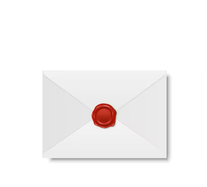

Oh? What's this?

A message? What could it read?
HEY DAWG!
In the interest of keeping as much of your present a surprise as possible, I'm not going to elaborate too much on what exactly is going on with the download process beyond what you strictly need to know. What I can tell you is that while it's not an overly complicated process, it is still very much a process that can go wrong, so just follow these instructions as to the letter as you're able to and you should be fine. You can always contact me if you encounter problems, but as long as you do exactly these things, you should be fine.
INSTALLATION GUIDE
Go to this website and get the complete install package. Sikarugir might get confused if you try to package the zip file the first time; I personally unzipped the file first and then just gave it ssp.exe to use as its reference file. If this doesn't work, just screw around with Sikarugir as best you can until the program boots up. I tested it on a Mac of my own and it worked just about fine, which it what I'm hoping happens here...
When you run the program for the first time—bear with me—an anime catgirl and a bunny-cat-sea slug thing with butterfly wings should appear on the bottom of your screen. They'll summon some big chat bubbles that may or may not get filled with a bunch of missing-character boxes, but don't worry if this happens (they're just speaking Japanese). Once dialogue finishes being written download this file, drag it from Finder and drop it onto the catgirl. When she finishes installing it, do the same with this one. Once the catgirl is done installing the files, right click her, hover over 'change ghost' and have a look at the other name that shows up.
If you get an error window like this when you start SSP, it probably can't find any ghosts to run. You can try dropping the .nar file onto that window instead. If that doesn't work, click the first button and point it towards your ghost directory (it should be \SSP\ghost).
If the right click menu is in Japanese, the language option is the 4th one up from the bottom. Select English and it should change immediately. If it doesn't, try restarting SSP.
If the catgirl will not install anything for you, you can unzip the .nar files yourself and drag the contents into the SSP\balloon and \SSP\ghost folders respectively. Your unzipped folder should have subfolders called 'ghost' and 'shell' on the top level, if it doesn't you'll have to move all the files up one level. Once that's done, restart SSP and try the change ghost option again.
The right click menu is very important, btw. Pretty much all the important settings and config stuff is in there. Would recommend having a look when you've got the time after receiving the present.